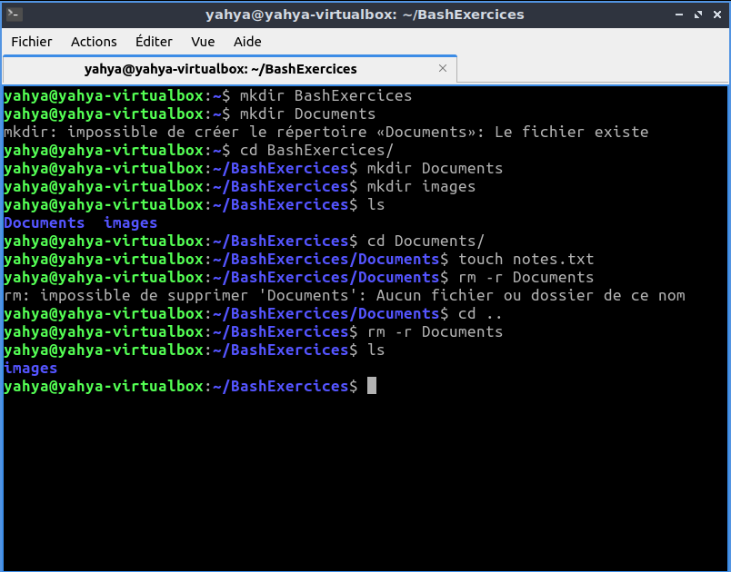
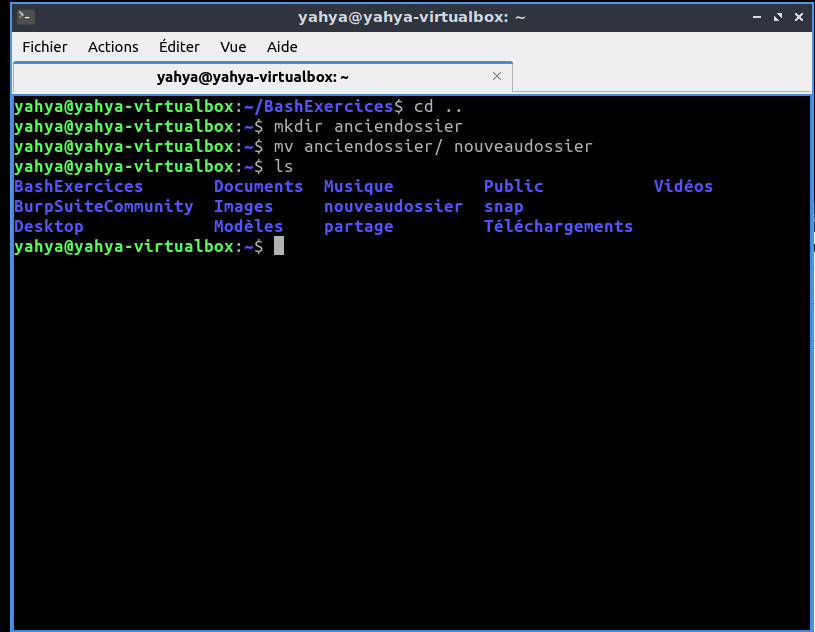
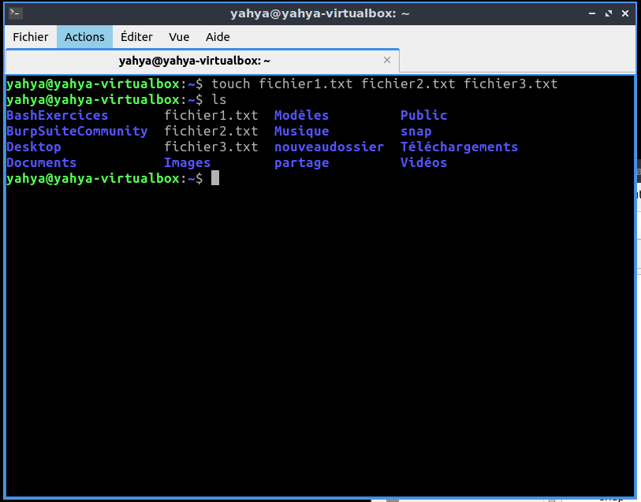
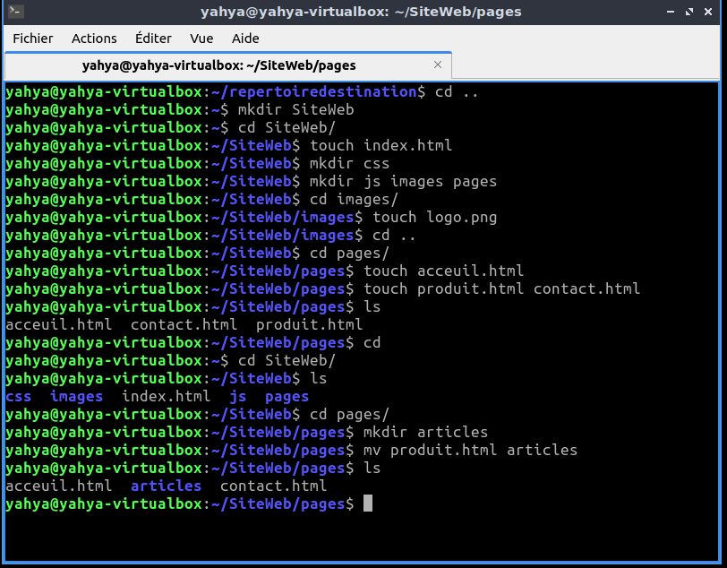
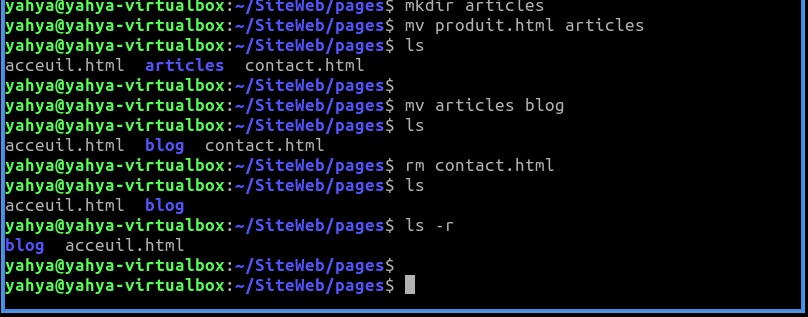
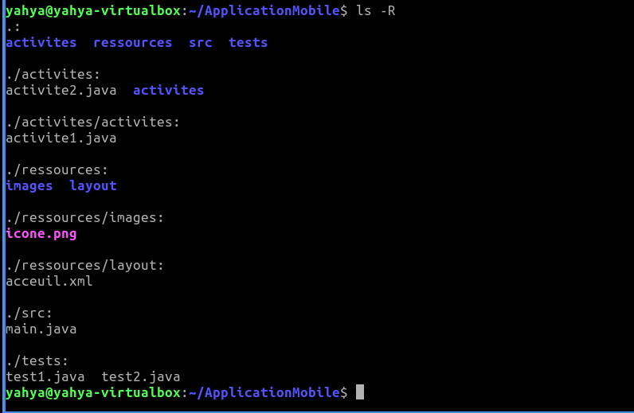
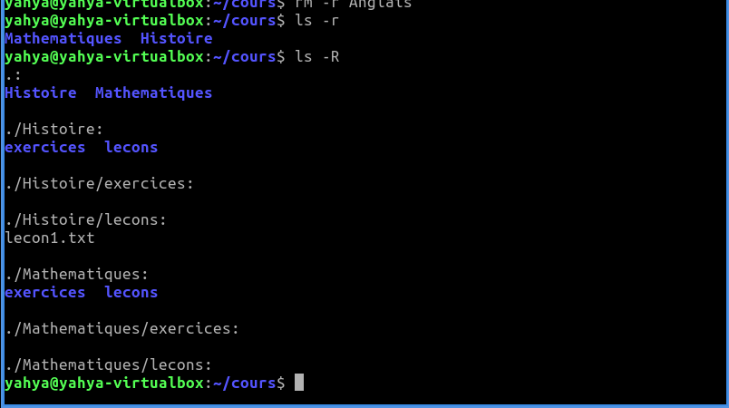
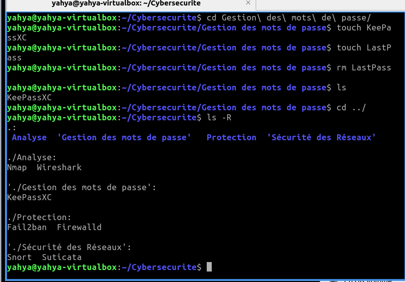

Bash : créer, déplacer et supprimer des fichiers et dossiers
Le terminal Linux (Bash) sert à organiser ses fichiers avec quelques commandes. Huit exercices progressifs : créer des dossiers, déplacer, renommer, supprimer, puis construire de vraies arborescences (site web, application, cours, outils de cybersécurité).
Avant de commencer
- Un terminal Linux.
- Les commandes de base : pwd (où suis-je), ls (lister), mkdir (créer un dossier), cd (entrer dans un dossier), touch (créer un fichier vide), mv (déplacer ou renommer), rm (supprimer), rm -r (supprimer un dossier et son contenu), clear (nettoyer l’écran).
Les étapes
Exercice 1 : dossiers et fichiers
Créer un dossier avec deux sous-dossiers, y mettre un fichier, le déplacer, puis supprimer un dossier avec tout son contenu.
mkdir BashExercises cd BashExercises mkdir Documents Images ls touch Documents/notes.txt mv Documents/notes.txt Images/ rm -r Documents ls
Ma capture : exercice 1 Exercice 2 : renommer un dossier
Avec mv, renommer et déplacer sont la même commande.
mkdir AncienDossier mv AncienDossier NouveauDossier ls
Ma capture : exercice 2 Exercice 3 : plusieurs fichiers d’un coup
touch accepte plusieurs noms. clear nettoie l’écran.
touch fichier1.txt fichier2.txt fichier3.txt clear ls
Ma capture : exercice 3 Exercice 4 : déplacer un fichier
Source et destination : on crée deux dossiers et on déplace un fichier de l’un à l’autre.
mkdir RepertoireSource RepertoireDestination touch RepertoireSource/fichier_source.txt mv RepertoireSource/fichier_source.txt RepertoireDestination/ ls RepertoireDestinationExercice 5 : l’arborescence d’un site web
mkdir -p crée plusieurs niveaux d’un coup. On déplace produits.html dans articles, on renomme articles en blog, on supprime contact.html, puis ls -R affiche toute la structure.
mkdir -p SiteWeb/{css,js,images,pages} touch SiteWeb/index.html SiteWeb/images/logo.png touch SiteWeb/pages/{accueil,produits,contact}.html mkdir SiteWeb/pages/articles mv SiteWeb/pages/produits.html SiteWeb/pages/articles/ mv SiteWeb/pages/articles SiteWeb/pages/blog rm SiteWeb/pages/contact.html ls -R SiteWeb
Ma capture : création du site et déplacement 
Ma capture : renommage, suppression et ls Exercice 6 : une application mobile
Attention : le dossier activites existe déjà. Renommer activites2 en activites place donc activites2 à l’intérieur (activites/activites). Pour un vrai renommage, choisissez un nom libre.
mkdir -p ApplicationMobile/{src,activites,ressources/layout,ressources/images,tests} touch ApplicationMobile/src/main.java touch ApplicationMobile/activites/activite{1,2}.java touch ApplicationMobile/ressources/layout/{accueil,parametres}.xml touch ApplicationMobile/ressources/images/icone.png touch ApplicationMobile/tests/test{1,2}.java mkdir ApplicationMobile/activites/activites2 mv ApplicationMobile/activites/activite1.java ApplicationMobile/activites/activites2/ rm ApplicationMobile/ressources/layout/parametres.xml ls -R ApplicationMobile
Ma capture : exercice 6 Exercice 7 : cours et matières
rm -r supprime un dossier entier : il n’y a pas de corbeille, vérifiez bien le nom.
mkdir -p Cours/{Mathematiques,Histoire,Anglais}/{lecons,exercices} touch Cours/Mathematiques/lecons/lecon1.txt mv Cours/Mathematiques/lecons/lecon1.txt Cours/Histoire/lecons/ rm -r Cours/Anglais ls -R Cours
Ma capture : exercice 7 Exercice 8 : outils de cybersécurité
On range des outils par catégorie, puis on renomme une catégorie et on supprime un outil. Les guillemets sont nécessaires quand un nom contient des espaces.
mkdir -p Cybersecurite/{Analyse,Protection,"Gestion des mots de passe","Détection d'intrusion"} touch Cybersecurite/Analyse/{Nmap,Wireshark} touch Cybersecurite/Protection/{Fail2ban,Firewalld} touch "Cybersecurite/Détection d'intrusion"/{Snort,Suricata} touch "Cybersecurite/Gestion des mots de passe"/{KeePassXC,LastPass} mv "Cybersecurite/Détection d'intrusion" "Cybersecurite/Sécurité des Réseaux" rm "Cybersecurite/Gestion des mots de passe/LastPass" ls -R Cybersecurite
Ma capture : exercice 8
Vérifier que ça marche
Pour vérifier chaque exercice :
ls -Rls -R affiche tous les dossiers et sous-dossiers : comparez avec la structure demandée.
À retenir
- mv sert à déplacer et à renommer ; si le nom cible est un dossier qui existe, le fichier est placé dedans.
- rm -r est définitif : pas de corbeille.
- Pour de l’aide : whatis ls, ls --help, man ls.